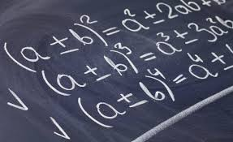
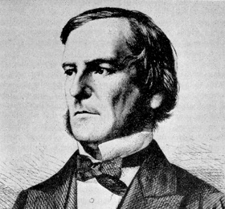
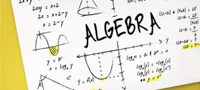

PAGINA PRINCIPAL
ÀLGEBRA
¿QUE ES EL ÀLGEBRA?
Àlgebra es el nombre que identifica a una rama de la Matemática que emplea números, letras y signos para poder hacer referencia a múltiples operaciones aritméticas. El término tiene su origen en el latín algebra, el cual, a su vez, proviene de un vocablo árabe que se traduce al español como “reducción” o “cotejo”.
son el tipo de plantas que tienen un tallo fuerte y leñoso, con un tamaño de más o menos cinco metros. Dentro de los arboles se distinguen por su tamaño, por su longevidad y por sus ramas donde todos los años se genera un mayor número de ellas.
Estos se prenden a la tierra a través de sus raíces que conforme avanza su desarrollo con el tiempo se tornarán gruesas. Hay también una gran pluralidad de árboles como los frondosos, las coníferas y los arboles tropicales de este último tipo, las palmeras son los mas comunes a nivel mundial.
.
.

 Álgebra es el nombre que identifica a una rama de la Matemática que emplea números, letras y signos para poder hacer referencia a múltiples operaciones aritméticas. El término tiene su origen en el latín algebra, el cual, a su vez, proviene de un vocablo árabe que se traduce al español como “reducción” o “cotejo”.
Álgebra
Este origen etimológico permitió que, en tiempos pasados, se conociera como álgebra al arte focalizado en la reducción de huesos que estaban dislocados o quebrados. Este significado, de todas maneras, ha caído en desuso.
Hoy entendemos como álgebra al área matemática que se centra en las relaciones, estructuras y cantidades. La disciplina que se conoce como álgebra elemental, en este marco, sirve para llevar a cabo operaciones aritméticas (suma, resta, multiplicación, división) pero que, a diferencia de la aritmética, se vale de símbolos (a, x, y) en lugar de utilizar números. Esto permite formular leyes generales y hacer referencia a números desconocidos (incógnitas), lo que posibilita el desarrollo de ecuaciones y el análisis correspondiente a su resolución.
Álgebra es el nombre que identifica a una rama de la Matemática que emplea números, letras y signos para poder hacer referencia a múltiples operaciones aritméticas. El término tiene su origen en el latín algebra, el cual, a su vez, proviene de un vocablo árabe que se traduce al español como “reducción” o “cotejo”.
Álgebra
Este origen etimológico permitió que, en tiempos pasados, se conociera como álgebra al arte focalizado en la reducción de huesos que estaban dislocados o quebrados. Este significado, de todas maneras, ha caído en desuso.
Hoy entendemos como álgebra al área matemática que se centra en las relaciones, estructuras y cantidades. La disciplina que se conoce como álgebra elemental, en este marco, sirve para llevar a cabo operaciones aritméticas (suma, resta, multiplicación, división) pero que, a diferencia de la aritmética, se vale de símbolos (a, x, y) en lugar de utilizar números. Esto permite formular leyes generales y hacer referencia a números desconocidos (incógnitas), lo que posibilita el desarrollo de ecuaciones y el análisis correspondiente a su resolución.
El álgebra elemental postula distintas leyes que permiten conocer las diferentes propiedades que poseen las operaciones aritméticas. Por ejemplo, la adición (a + b) es conmutativa (a + b = b + a), asociativa, tiene una operación inversa (la sustracción) y posee un elemento neutro (0).
Algunas de estas propiedades son compartidas por distintas operaciones; la multiplicación, por ejemplo, también es conmutativa y asociativa.
Se conoce como Teorema Fundamental del Álgebra, por otra parte, a un postulado según el cual, en una variable no constante donde hay coeficientes complejos, un polinomio posee tantas raíces como marca su grado, debido a que las raíces se tienen en cuenta con sus multiplicidades. Esto supone que el cuerpo de los números complejos es cerrado para las operaciones del álgebra.

EL ALGEBRA DE BOOLE.
Los sistemas de control, tales como conectores y relés, utilizan muchos componentes que tienen dos estados muy bien diferenciados: abierto (conduce) o cerrado (no conduce). Éstos se denominan componentes todo o nada, o lógicos.
Dichos estados se representan con los números 1 y 0, lo que facilita el estudio sistemático del comportamiento de los componentes lógicos. A su vez, se aplica un conjunto de leyes y propiedades comunes que no tienen relación directa con el tipo de elemento en cuestión (no importa si se trata de una puerta lógica, un relé o un transistor).
De acuerdo a todo esto, cualquier componente de tipo todo o nada puede ser representado por una variable lógica, lo cual significa que ésta podrá presentar el valor 1 o 0. Se llama álgebra de Boole al grupo de leyes y reglas que se tienen en cuenta para operar con este tipo de variables; su denominación viene del apellido del creador, un matemático inglés autodidacta cuyo nombre de pila era George y que vivió en el siglo XIX.
Las variables booleanas en la programación.
También conocidas como flags, las variables booleanas (término castellanizado y proveniente de «boolean», por lo que su pronunciación es «buleanas») pueden recibir uno de dos valores; éstos suelen asociarse con verdadero y falso, y en muchos lenguajes de programación es posible utilizar los números 1 y 0 o las palabras indistintamente.
Su utilidad es muy amplia, ya que en programación todo depende de la habilidad y la creatividad de cada persona en particular y resulta imposible determinar una única forma de estructurar un código o de usar un recurso. A grandes rasgos, una variable de tipo booleano sirve para registrar la realización de una determinada tarea; por ejemplo, al comienzo de una aplicación se suelen cargar la gráfica para la interfaz y la música, y una variable lógica podría inicializarse en «falso» para esperar a que se complete dicho proceso, y recién ahí cambiar a «verdadero», de manera que el programa no intente repetir los pasos y pueda seguir adelante.

INICIO